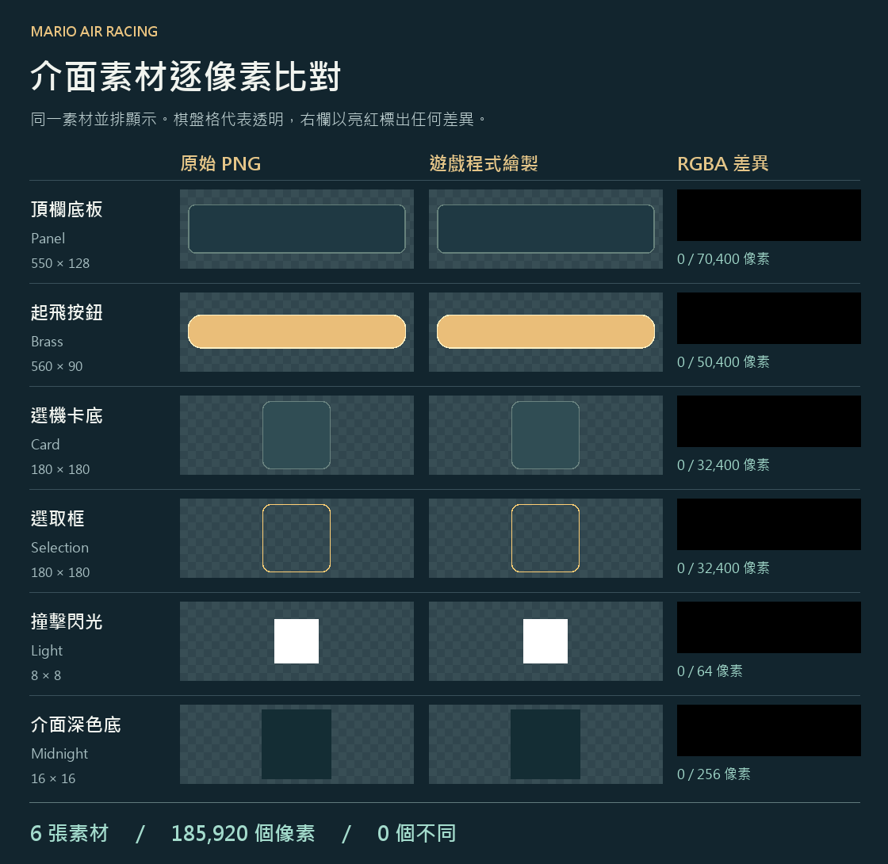

<!doctype html><html lang="zh-Hant"><meta charset="utf-8"><meta name="viewport" content="width=device-width,initial-scale=1"><meta name="color-scheme" content="dark"><title>飛行介面素材比對 | mario-air-racing</title>
<style>*{box-sizing:border-box}body{margin:0;background:#12252e;color:#f3f3ed;font-family:system-ui,"Microsoft JhengHei",sans-serif;line-height:1.5}main{max-width:1120px;margin:auto;padding:clamp(18px,4vw,44px)}header{border-bottom:1px solid #50656a;padding-bottom:18px}h1{font-size:clamp(27px,5vw,46px);line-height:1.15;margin:.25em 0}p{color:#c3d2d2}a{color:#f1ce90}label,select{font:inherit}select{background:#29424b;color:#fff;border:1px solid #839fa0;border-radius:5px;padding:7px 12px}section{padding:22px 0}.grid{display:grid;grid-template-columns:1fr 1fr 1fr;gap:12px;margin-top:14px}figure{margin:0;min-width:0}figcaption{font-weight:600;margin-bottom:7px}.tile{height:clamp(100px,17vw,168px);display:grid;place-items:center;background:repeating-conic-gradient(#31464e 0% 25%,#384e55 0% 50%) 0 0/16px 16px}.delta{background:#000}canvas{width:100%;height:100%;object-fit:contain}.tile canvas[width="8"],.tile canvas[width="16"]{width:48px;height:48px}output{display:block;margin-top:13px;color:#a3dbcc;font-weight:600}img{display:block;width:100%;height:auto}h2{font-size:21px}small{color:#e9c88b}.source{display:inline-block;margin-bottom:12px}@media(max-width:620px){.grid{grid-template-columns:1fr 1fr}.grid figure:last-child{grid-column:1 / -1}.delta{height:38px}main{padding:18px}.tile{border:1px solid #486068}}</style>
<main><header><small>mario-air-racing</small><h1>介面素材比對</h1><p>選一個元件，左側顯示原始 PNG，右側由瀏覽器執行遊戲的繪圖程式。差異圖用紅色標出 RGBA 值不同的像素。</p><a href="./comparison.png">直接開啟六張素材的完整比對圖</a></header>
<nav style="padding:14px 0"><a href="./hangar.png">手機選機畫面比對</a>　·　<a href="./models.png">五架飛機與海洋預覽比對</a></nav><section><label>選擇素材　<select aria-label="選擇素材"></select></label><div class="grid"><figure><figcaption>原始 PNG</figcaption><div class="tile"><canvas></canvas></div></figure><figure><figcaption>程式即時繪製</figcaption><div class="tile"><canvas></canvas></div></figure><figure><figcaption>逐像素差異</figcaption><div class="tile delta"><canvas></canvas></div></figure></div><output aria-live="polite"></output></section>
<section><h2>全部素材</h2><a href="./comparison.png"></a></section></main><script src="./viewer.js"></script></html>
